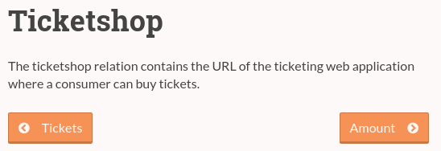
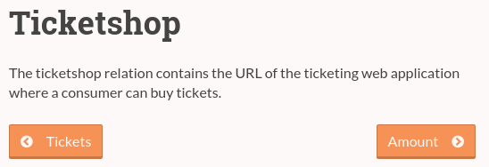

Designing REST API's
A process oriented approach
Who am I?
- Lars de Ridder
- Head of Tech at Paylogic
- Designed a few REST API's
- Also do other things
Show of hands
- Who used a REST API?
- Who knows what REST stands for?
- Who recently built an internal RESTful API?
- Who recently built a public-facing RESTful API?
Table of contents
- Goals of REST
- Process vs data oriented API design
- Media types in API's
- Best practices / lessons learned
What will you take away from this talk?
- Change the way you think about designing REST API's
- Designing REST API's isn't easy
- Process is more important than data
- Media types can make my life as an API developer easier
Goals of REST
- Loose coupling of client and server
- Scalable
- Use existing web infrastructure
The web seems to work well enough, let's design API's the same way
REST API design
But isn't REST just exposing my DB tables as resources?
How to design your REST API
Step 1 - Design your process
Step 2 - Design your process!
Step 3 - Design your process!!
Data oriented design
How?
Simple!
- Expose DB tables / ORM models als resources
- Use relations between entities as link relations
- Use HTTP verbs for CRUD
Example case
The data

Resources
/coffeetypes GET
/cupsofcoffee GET, POST
/baristas GET
/orders GET, POST
Flow
GET /coffeetypes
GET /baristas
POST /cupsofcoffee { coffee_type: ... }
<- { self: /cupsofcoffee/xyz }
POST /orders { cupsofcoffee: [ xyz ], barista: ... }
What's missing?
Really the right approach?
Really?

Advantages
- Easy to design and build
- Flexible clients
Disadvantages
- Hard to build clients
- Logic in clients (DRY?)
- Easy to run into inefficient interactions
- Tight coupling between API design and DB design
When data-oriented design?
- Internal API's
- HTML ORM's
- Flexibility of clients is essential
- You're
lazypressed for time
Process oriented design
Principles
- Design API for a purpose
- Limit flexibility for ease of use and efficiency
- Focus on relations (and process), not on resources (and data)
How?
- Model your process as seen from the end-user
- Determine which steps in this process your client supports
- For every step: "Invent" resource
- For every resource: Determine relations
- Finally: Consider which data is involved for each resource
Model your process as seen from the end-user
State diagram, flow chart, use case, BPMN, words, whatever
Coffee process
Determine which steps in this process your client supports

For every step: "Invent" resource
- Resource has to be a noun
- Verbs come from HTTP
- Avoid /orders/create or /barista/order
Base design decisions on what the API user wants to achieve
Coffee resources
Operations: Choose coffee type, order with barista, and pay
/coffeetypes GET
/quote GET
/orders (or /payments) GET, POST
Maybe /baristas? GET
For every resource: Determine relations
This is essential
- The API should guide the client
- Use link relations, never rely on URL's
- Use standard link relations where possible (IANA.org)
- Properly and extensively document your own relations
The coffee must flow
GET /coffeetypes
GET /quote?coffeetype=xyz&quantity=2
<- { _links: { place_order: /orders }, ... }
POST /orders { coffee: [ /coffeetypes/xyz: 2 ] }
Example relations
 

Finally: consider which data is involved for every resource
Don't be afraid to manipulate multiple (or no!) DB tables for one resource
Advantages
- Logic on server
- Building clients is easy
- Interactions are efficient (as designed)
- No coupling between DB models and API interaction
Disadvantages
- Less flexible clients (but can be built into design)
- Initial design is difficult
Media types in API's
Can't we just use HTML in the API?
What is a media type for API's
Standard on how to format your (JSON) response, containing conventions to combat bike-shedding
Why consider API media types?
- Docs and tooling already written
- Conventions for many concepts
- Why reinvent the wheel?
What do they define?
- Link relations (and deprecation)
- Collections
- Error messages
- Resource embedding
Some media types
HAL
http://stateless.co/hal_specification.html
- Minimalistic -> Embrace HTTP standards
- Process-oriented
{
"_links": {
"self": { "href": "/orders" },
"next": { "href": "/orders?page=2" }
},
"currentlyProcessing": 14,
"shippedToday": 20,
"_embedded": {
"order": [{
"_links": {
"self": { "href": "/orders/123" },
"basket": { "href": "/baskets/98712" },
"customer": { "href": "/customers/7809" }
},
"total": 30.00,
"currency": "USD",
"status": "shipped"
}]
}
}
JSON API
- CRUD oriented
- "Batteries included"
{
"links": {
"self": "http://example.com/posts",
"next": "http://example.com/posts?page[offset]=2",
},
"data": [{
"type": "posts",
"id": "1",
"attributes": {
"title": "JSON API paints my bikeshed!"
},
"links": {
"self": "http://example.com/posts/1",
"author": {
"self": "http://example.com/posts/1/links/author",
"related": "http://example.com/posts/1/author",
"linkage": { "type": "people", "id": "9" }
}
}
}],
"included": [{
"type": "people",
"id": "9",
"attributes": {
"first-name": "Dan",
"last-name": "Gebhardt",
"twitter": "dgeb"
},
"links": {
"self": "http://example.com/people/9"
}
}]
}
Mason
https://github.com/JornWildt/Mason- Like HAL, but with actiions
{
"ID": 1,
"Title": "Program crashes when pressing ctrl-p",
"Severity": 5,
"@links": {
"self": {
"href": "http://issue-tracker.org/issues/1"
},
"up": {
"href": "http://issue-tracker.org/projects/1",
"title": "Containing project"
},
}
"@actions": {
"project-create": {
"type": "json",
"href": "http://issue-tracker.org/mason-demo/projects",
"title": "Create new project",
"schemaUrl": "http://issue-tracker.org/mason-demo/schemas/create-project"
}
}
JSON Patch
http://jsonpatch.com/
The original document:
{
"baz": "qux",
"foo": "bar"
}
The patch:
[
{ "op": "replace", "path": "/baz", "value": "boo" },
{ "op": "add", "path": "/hello", "value": ["world"] },
{ "op": "remove", "path": "/foo"}
]
The result:
{
"baz": "boo",
"hello": ["world"]
}
vnd.error
https://github.com/blongden/vnd.error
{
"logref": "42",
"message": "A payment method is needed for the creation of an
order. Please retrieve a bill for the selected products to
see which payment methods are available.",
"type": "BAD_REQUEST",
"_links": {
"help": {
"href": "http://shopping-api-docs.sandbox.paylogic.com/orders",
"type": "text/html"
}
}
}
Best practices / lessons learned
Always show as much as you safely can
- All entities
- All attributes (with sensible empty defaults)
If needed, allow client to filter them out (via header or query parameter)
Documentation
Write documentation from process-perspective: What does the client developer want to achieve?
Discoverability is no replacement for documentation
Discoverability
You don't have to design for run-time discoverability
New relations mean implementation time at the client
Focus on the unhappy paths
Design ALL error messages your API can generate and document them!
When implementing change: Leave your options open
- What are my options?
- Which changes are coming up?
- For each choice: Does it close off other interesting paths / extensions / alternatives?
Push for clients using link relations
And build in a mechanism for link deprecation
That's it!
Reading material
- REST in Practice - Jim Webber et al
- RESTful Web Services Cookbook - Subbu Allamaraju
- Google groups: api-craft, hal-discuss
Want to work on a cool API? See http://www.paylogic.com/en/vacancy/
Questions?